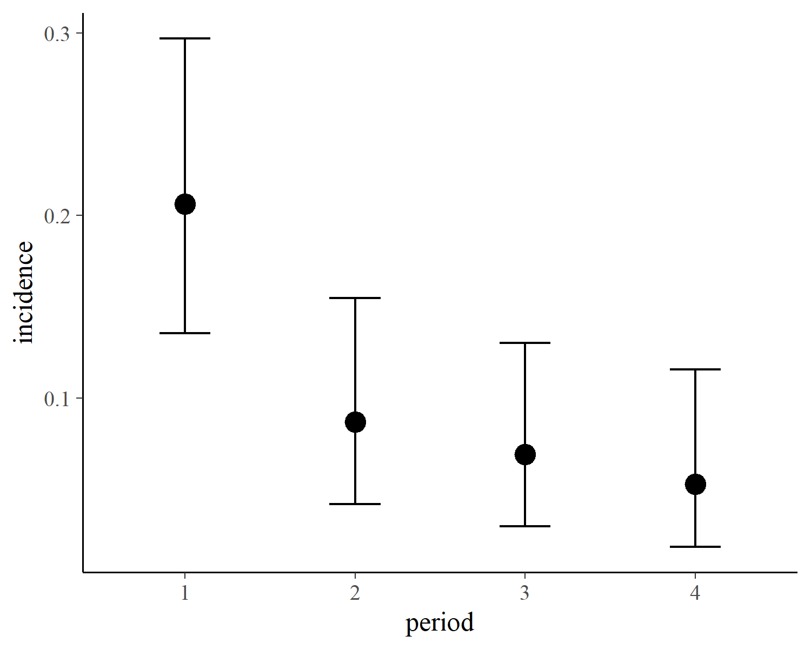

Define Custom Response Distributions with brms
Paul Bürkner
2019-05-23
Source:vignettes/brms_customfamilies.Rmd
brms_customfamilies.RmdIntroduction
The brms package comes with a lot of built-in response distributions – usually called families in R – to specify among others linear, count data, survival, response times, or ordinal models (see help(brmsfamily) for an overview). Despite supporting over two dozen families, there is still a long list of distributions, which are not natively supported. The present vignette will explain how to specify such custom families in brms. By doing that, users can benefit from the modeling flexibility and post-processing options of brms even when using self-defined response distributions.
A Case Study
As a case study, we will use the cbpp data of the lme4 package, which describes the development of the CBPP disease of cattle in Africa. The data set contains four variables: period (the time period), herd (a factor identifying the cattle herd), incidence (number of new disease cases for a given herd and time period), as well as size (the herd size at the beginning of a given time period).
herd incidence size period
1 1 2 14 1
2 1 3 12 2
3 1 4 9 3
4 1 0 5 4
5 2 3 22 1
6 2 1 18 2In a first step, we will be predicting incidence using a simple binomial model, which will serve as our baseline model. For observed number of events \(y\) (incidence in our case) and total number of trials \(T\) (size), the probability mass function of the binomial distribution is defined as
\[ P(y | T, p) = \binom{T}{y} p^{y} (1 - p)^{N-y} \]
where \(p\) is the event probability. In the classical binomial model, we will directly predict \(p\) on the logit-scale, which means that for each observation \(i\) we compute the success probability \(p_i\) as
\[ p_i = \frac{\exp(\eta_i)}{1 + \exp(\eta_i)} \]
where \(\eta_i\) is the linear predictor term of observation \(i\) (see vignette("brms_overview") for more details on linear predictors in brms). Predicting incidence by period and a varying intercept of herd is straight forward in brms:
In the summary output, we see that the incidence probability varies substantially over herds, but reduces over the cource of the time as indicated by the negative coefficients of period.
Family: binomial
Links: mu = logit
Formula: incidence | trials(size) ~ period + (1 | herd)
Data: cbpp (Number of observations: 56)
Samples: 4 chains, each with iter = 2000; warmup = 1000; thin = 1;
total post-warmup samples = 4000
Group-Level Effects:
~herd (Number of levels: 15)
Estimate Est.Error l-95% CI u-95% CI Eff.Sample Rhat
sd(Intercept) 0.77 0.23 0.40 1.31 1231 1.00
Population-Level Effects:
Estimate Est.Error l-95% CI u-95% CI Eff.Sample Rhat
Intercept -1.41 0.27 -1.96 -0.90 2143 1.00
period2 -1.00 0.31 -1.61 -0.42 4621 1.00
period3 -1.14 0.34 -1.82 -0.49 5018 1.00
period4 -1.63 0.43 -2.52 -0.81 4947 1.00
Samples were drawn using sampling(NUTS). For each parameter, Eff.Sample
is a crude measure of effective sample size, and Rhat is the potential
scale reduction factor on split chains (at convergence, Rhat = 1).A drawback of the binomial model is that – after taking into account the linear predictor – its variance is fixed to \(\text{Var}(y_i) = T_i p_i (1 - p_i)\). All variance exceeding this value cannot be not taken into account by the model. There are multiple ways of dealing with this so called overdispersion and the solution described below will serve as an illustrative example of how to define custom families in brms.
The Beta-Binomial Distribution
The so called beta-binomial model is a generalization of the binomial model with an additional parameter to account for overdispersion. In the beta-binomial model, we do not predict the binomial probability \(p_i\) directly, but assume it to be beta distributed with hyperparameters \(\alpha > 0\) and \(\beta > 0\):
\[ p_i \sim \text{Beta}(\alpha_i, \beta_i) \]
The \(\alpha\) and \(\beta\) parameters are both hard to interprete and generally not recommended for use in regression models. Thus, we will apply a different parameterization with parameters \(\mu \in [0, 1]\) and \(\phi > 0\), which we will call \(\text{Beta2}\):
\[ \text{Beta2}(\mu, \phi) = \text{Beta}(\mu \phi, (1-\mu) \phi) \]
The parameters \(\mu\) and \(\phi\) specify the mean and precision parameter, respectively. By defining
\[ \mu_i = \frac{\exp(\eta_i)}{1 + \exp(\eta_i)} \]
we still predict the expected probability by means of our transformed linear predictor (as in the original binomial model), but account for potential overdispersion via the parameter \(\phi\).
Fitting Custom Family Models
The beta-binomial distribution is not natively supported in brms and so we will have to define it ourselves using the custom_family function. This function requires the family’s name, the names of its parameters (mu and phi in our case), corresponding link functions (only applied if parameters are prediced), their theoretical lower and upper bounds (only applied if parameters are not predicted), information on whether the distribuion is discrete or continuous, and finally, whether additional non-parameter variables need to be passed to the distribution. For our beta-binomial example, this results in the following custom family:
beta_binomial2 <- custom_family(
"beta_binomial2", dpars = c("mu", "phi"),
links = c("logit", "log"), lb = c(NA, 0),
type = "int", vars = "trials[n]"
)Next, we have to provide the relevant Stan functions if the distribution is not defined in Stan itself. For the beta_binomial2 distribution, this is straight forward since the ordinal beta_binomial distribution is already implemented.
stan_funs <- "
real beta_binomial2_lpmf(int y, real mu, real phi, int T) {
return beta_binomial_lpmf(y | T, mu * phi, (1 - mu) * phi);
}
int beta_binomial2_rng(real mu, real phi, int T) {
return beta_binomial_rng(T, mu * phi, (1 - mu) * phi);
}
"For the model fitting, we will only need beta_binomial2_lpmf, but beta_binomial2_rng will come in handy when it comes to post-processing. If additional data needs to be passed to the distribution, we need it to prepared as well. In our running example, this is the case for the size of the herd and so we define:
stanvars <- stanvar(scode = stan_funs, block = "functions") +
stanvar(as.integer(cbpp$size), name = "trials")Actually, for this particular example, we could more elegantly apply the addition argument trials() as in the basic binomial model. However, since the present vignette is ment to give a general overview of the topic, we will go with the more general method of specifying custom data via stanvar.
We now have all components together to fit our custom beta-binomial model:
fit2 <- brm(
incidence ~ period + (1|herd), data = cbpp,
family = beta_binomial2, stanvars = stanvars
)The summary output reveals that the uncertainty in the coefficients of period is somewhat larger than in the basic binomial model, which is the result of including the overdispersion parameter phi in the model. Aparat from that, the results looks pretty similar.
Family: beta_binomial2
Links: mu = logit; phi = identity
Formula: incidence ~ period + (1 | herd)
Data: cbpp (Number of observations: 56)
Samples: 4 chains, each with iter = 2000; warmup = 1000; thin = 1;
total post-warmup samples = 4000
Group-Level Effects:
~herd (Number of levels: 15)
Estimate Est.Error l-95% CI u-95% CI Eff.Sample Rhat
sd(Intercept) 0.39 0.27 0.01 0.99 908 1.01
Population-Level Effects:
Estimate Est.Error l-95% CI u-95% CI Eff.Sample Rhat
Intercept -1.36 0.25 -1.85 -0.88 3777 1.00
period2 -1.00 0.41 -1.82 -0.20 3776 1.00
period3 -1.27 0.46 -2.21 -0.42 3969 1.00
period4 -1.55 0.52 -2.66 -0.58 3240 1.00
Family Specific Parameters:
Estimate Est.Error l-95% CI u-95% CI Eff.Sample Rhat
phi 17.99 17.37 5.57 58.77 674 1.00
Samples were drawn using sampling(NUTS). For each parameter, Eff.Sample
is a crude measure of effective sample size, and Rhat is the potential
scale reduction factor on split chains (at convergence, Rhat = 1).Post-Processing Custom Family Models
Some post-proecssing methods such as summary or plot work out of the box for custom family models. However, there are three particularily important methods, which require additional input by the user. These are fitted, predict and log_lik computing predicted mean values, predicted response values, and log-likelihood values, respectively. They are not only relevant for their own sake, but also provide the basis of many other post-processing methods. For instance, we may be interested in comparing the fit of the binomial model with that of the beta-binomial model by means of approximate leave-one-out cross-validation implemented in method loo, which in turn requires log_lik to be working.
The log_lik function of a family should be named log_lik_<family-name> and have the two arguments i (indicating observations) and draws. You don’t have to worry too much about how draws is created. Instead, all you need to know is that parameters are stored in slot dpars and data are stored in slot data. Generally, parameters take on the form of a \(S \times N\) matrix (with \(S =\) number of posterior samples and \(N =\) number of observations) if they are predicted (as is mu in our example) and a vector of size \(N\) if the are not predicted (as is phi).
We could define the complete log-likelihood function R directly, or we can expose the self-defined Stan functions and apply them. The latter approach is usually more convenient, but the former is more stable and the only option when implementing custom families in other R packages building upon brms. For the purpose of the present vignette, we will go with the latter approach
and define the required log_lik functions with a few lines of code.
log_lik_beta_binomial2 <- function(i, draws) {
mu <- draws$dpars$mu[, i]
phi <- draws$dpars$phi
N <- draws$data$trials[i]
y <- draws$data$Y[i]
beta_binomial2_lpmf(y, mu, phi, N)
}With that being done, all of the post-processing methods requiring log_lik will work as well. For instance, model comparison can simply be performed via
Output of model 'fit1':
Computed from 4000 by 56 log-likelihood matrix
Estimate SE
elpd_loo -99.5 10.1
p_loo 21.7 4.2
looic 199.0 20.1
------
Monte Carlo SE of elpd_loo is NA.
Pareto k diagnostic values:
Count Pct. Min. n_eff
(-Inf, 0.5] (good) 44 78.6% 691
(0.5, 0.7] (ok) 9 16.1% 244
(0.7, 1] (bad) 3 5.4% 55
(1, Inf) (very bad) 0 0.0% <NA>
See help('pareto-k-diagnostic') for details.
Output of model 'fit2':
Computed from 4000 by 56 log-likelihood matrix
Estimate SE
elpd_loo -94.5 8.2
p_loo 10.4 1.8
looic 188.9 16.4
------
Monte Carlo SE of elpd_loo is NA.
Pareto k diagnostic values:
Count Pct. Min. n_eff
(-Inf, 0.5] (good) 49 87.5% 355
(0.5, 0.7] (ok) 6 10.7% 780
(0.7, 1] (bad) 1 1.8% 300
(1, Inf) (very bad) 0 0.0% <NA>
See help('pareto-k-diagnostic') for details.
Model comparisons:
elpd_diff se_diff
fit2 0.0 0.0
fit1 -5.0 4.4 Since smaller LOOIC values indicate better fit, we see that the beta-binomial model fits somewhat better, although the corresponding standard error reveals that the difference is not that substantial.
Next, we will define the function necessary for the predict method:
predict_beta_binomial2 <- function(i, draws, ...) {
mu <- draws$dpars$mu[, i]
phi <- draws$dpars$phi
N <- draws$data$trials[i]
beta_binomial2_rng(mu, phi, N)
}The predict function looks pretty similar to the corresponding log_lik function, except that we are now creating random samples of the response instead of log-liklihood values. Again, we are using an exposed Stan function for convenience. Make sure to add a ... argument to your `predict function even if you are not using it, since some families require additional arguments. With predict to be working, we can engage for instance in posterior-predictive checking:

When defining the fitted function, you have to keep in mind that it has only a draws argument and should compute the mean response values for all observations at once. Since the mean of the beta-binomial distribution is \(\text{E}(y) = \mu T\) definition of the corresponding fitted function is not too complicated, but we need to get the dimension of parameters and data in line.
fitted_beta_binomial2 <- function(draws) {
mu <- draws$dpars$mu
trials <- draws$data$trials
trials <- matrix(trials, nrow = nrow(mu), ncol = ncol(mu), byrow = TRUE)
mu * trials
}A post-processing method relying directly on fitted is marginal_effects, which allows to visualize effects of predictors.

For ease of interpretation we have set trials to 1 so that the y-axis of the above plot indicates probabilities.
Turning a Custom Family into a Native Family
Family functions built natively into brms are saver to use and more convenient, as they require much less user input. If you think that your custom family is general enough to be useful to other users, please feel free to open an issue on GitHub so that we can discuss all the details. Provided that we agree it makes sense to implement your family natively in brms, the following steps are required (foo is a placeholder for the family name):
- In
family-lists.R, add function.family_foowhich should contain basic information about your family (you will find lots of examples for other families there). - In
families.R, add family functionfoowhich should be a simple wrapper around.brmsfamily. - In
stan-likelihood.R, add functionstan_llh_foowhich provides the likelihood of the family in Stan language. - If necessary, add self-defined Stan functions in separate files under
inst/chunks. - Add functions
predict_foo,fitted_fooandlog_lik_footopredict.R,fitted.Randlog_lik.R, respectively. - If necessary, add distribution functions to
distributions.R.